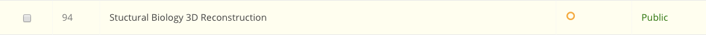
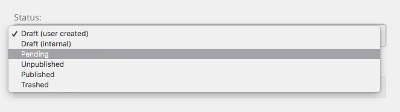

Hub managers
Approving Content
When auto-approval is off, a resource or publication a user submits sits in a pending state until an administrator publishes it. This page covers finding that queue and clearing it.
Turning auto-approval on or off
Both components that queue submissions carry the setting in their Options (the Options button in the component's toolbar).
Resources — see the generated parameter list:
| Parameter | Label on screen | Default |
|---|---|---|
autoapprove |
Auto-approve | No |
autoapproved_users |
Auto-approved Users | empty |
autoapprove_content_check |
Auto-approve Content Check | No |
email_when_submitted |
Notify Upon Submission | {config.mailfrom} |
email_when_approved |
Email When Published | No |
Auto-approved Users is a list of usernames whose submissions skip the queue even when Auto-approve is off. Auto-approve Content Check requires an auto-approved front-end submission to actually have content before it is accepted.
Publications — see the generated parameter list — has the same first two: Auto-approve and Auto-approved Users.
Resource states
A resource's state is the published column, and the admin list's Status
filter offers every one of them:
| Value | Filter label |
|---|---|
| 2 | Draft (external) |
| 5 | Draft (internal) |
| 3 | Pending |
| 0 | Unpublished |
| 1 | Published |
| 4 | Trashed |
| -1 | Archived |
Only state 3 is the approval queue. The other unpublished states are drafts the author has not submitted, or items an administrator has taken down.
Clearing the queue

- Go to Components → Resources.
- Set the Status filter to Pending.
- Tick the resources to approve and select Publish in the toolbar, or open one by its title and set its status on the edit form.

Publishing stamps the publish-up date and, if Email When Published is on, notifies the submitter. The resource then appears in browse and search for anyone its access level allows.
Publishing requires the core.edit.state permission on com_resources. A
resource checked out by another administrator is skipped.
Publications
Publications move through a curation workflow rather than a single pending flag, and the admin list's Status filter names each stage:
| Value | Filter label | Meaning |
|---|---|---|
| 3 | draft | Author is still working |
| 4 | ready | Posted for review |
| 5 | pending approval | Awaiting an administrator |
| 7 | changes required | Sent back to the author |
| 1 | published | Live |
| 0 | unpublished | Taken down |
| 2 | deleted | Removed |
Go to Components → Publications, filter to pending approval, and open a publication to review it. The curation panel walks the manifest block by block; each block is either approved or sent back, and a publication with any block outstanding moves to changes required rather than published.
The mod_mycuration module gives curators a site-side list of the items
assigned to them, split into Review and Pending changes.
Where the counts come from
The Resources dashboard panel counts each state directly:
$queries = array(
'unpublished' => 0,
'published' => 1,
'draftUser' => 2,
'pending' => 3,
'removed' => 4,
'draftInternal' => 5
);
foreach ($queries as $key => $state)
{
$database->setQuery("SELECT count(*) FROM `#__resources` WHERE published=$state AND standalone=1");
$this->$key = $database->loadResult();
}
Rewritten and checked against 2.4-main @ 123ea53b14 on 2026-09-09.